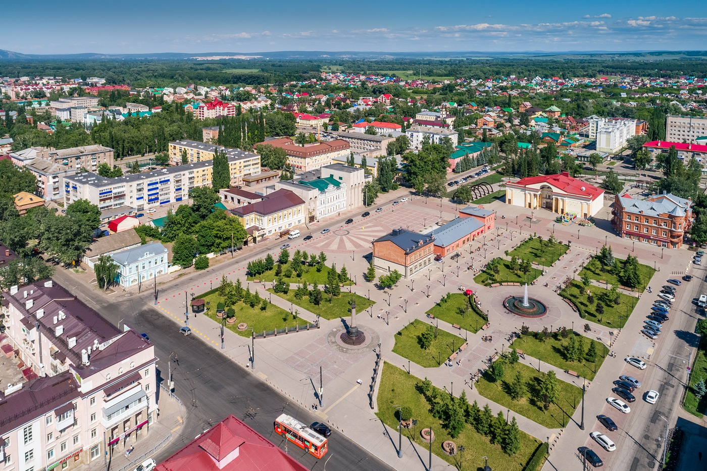

Знакомство со Стерлитамаком
Стерлитамак — второй по величине город Башкортостана, основанный в 1766 году как соляная пристань. Сегодня это крупный культурный центр, сохранивший шарм купеческой архитектуры и окружённый уникальными памятниками природы.
Исследовать город
Факты о городе
Второй в республике
Крупнейший индустриальный и образовательный центр Башкортостана с населением свыше 270 тысяч человек.
Город четырёх рек
Стерлитамак расположен в месте слияния рек: Белой, Ашкадара, Стерли и Ольховки, определивших его историю.
Ворота к Шиханам
В окрестностях города возвышаются знаменитые горы Торатау, Куштау и Юрактау — рифы древнего Пермского моря.
Популярные места
Все места
Шихан Торатау
Величественный останец древнего рифа и визитная карточка природы вокруг города.
20 км от города
Подробнее
Бывшая земская управа
Архитектурная жемчужина старого города, построенная в начале XX века в стиле эклектики.
Ул. Карла Маркса
Подробнее
Русский драмтеатр
Один из ключевых центров культурной жизни горожан на Театральной площади.
Ул. Худайбердина
Подробнее